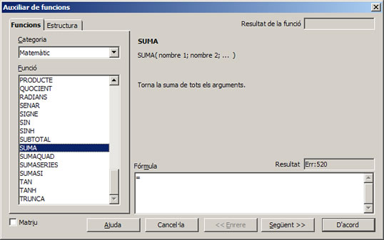
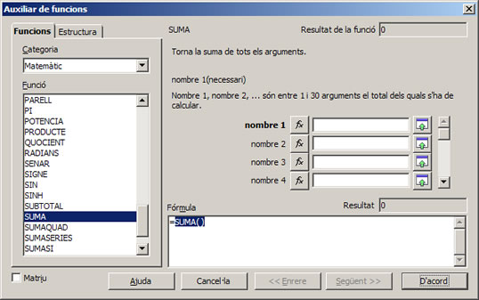
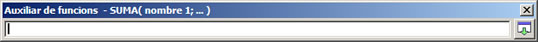
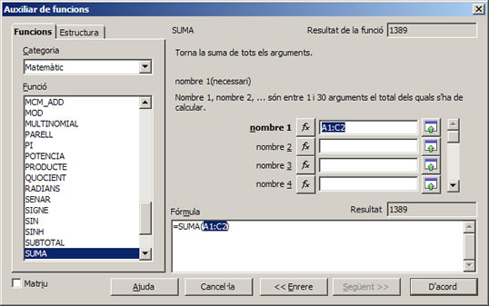
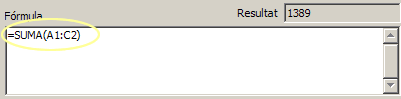
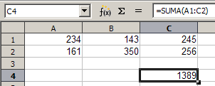

UF4. Fulls de càlcul
G rapida - autopilot
Auxiliar de funcions
Obre l'assistent per a funcions que permet crear fórmules d'una manera interactiva. Abans d'iniciar l'assistent, cal que seleccioneu una cel·la o una àrea de cel·les del full actual a fi de determinar la posició del full en què s'inserirà la fórmula.
També podeu obrir l'assistent per a funcions:
- Amb l'opció de menú Insereix | Funció…
- Prement la combinació de tecles Ctrl+F2
En qualsevol cas, s'iniciarà l'assistent per a funcions:

- El desplegable Categoria permet escollir entre les diferents categories a què estan assignades les funcions:
- Base de dades.
- Data i hora.
- Financer.
- Informació.
- Lògic.
- Matemàtic.
- Matriu.
- Estadístic.
- Full de càlcul.
- Text.
- Complement.
- D'acord amb la categoria escollida, a Funció apareixerà la llista de funcions assignades a la categoria.
- Si feu doble clic sobre el nom de la funció o bé si feu un sol clic sobre el nom de la funció i premeu sobre el botó Següent», s'activarà l'assistent de la funció escollida.
 - A la part dreta de la finestra de l'auxiliar de funcions obtindreu una breu descripció de la funció escollida i les característiques que han de complir els arguments de la funció. En l'exemple que apareix a la figura anterior observeu que la funció SUMA admet fins a 30 arguments i que, pel cap baix, s'ha d'indicar 1 argument.
- La llista d'arguments permet escriure, a la casella corresponent, el valor de l'argument o la referència. El botó Redueix permet escollir, directament del full de càlcul, la cel·la o el rang de cel·les que formen l'argument:
- La finestra Auxiliar de funcions es redueix per permetre veure la major part del full i facilitar l'escriptura o la selecció de la cel·la o del rang de cel·les que formarà el primer argument.
 - L'ús del ratolí facilita escollir les cel·les. Només cal marcar la cel·la o arrossegar-lo per l'àrea de cel·les per a que s'afegeixi la referència en l'auxiliar de funcions:
- El botó Maximitza, restaura l'auxiliar de funcions i permet continuar l'edició de la funció:
 - També, al requadre Fórmula hi podeu escriure o completar l'expressió de la funció:
 - En finalitzar d'afegir els arguments de la funció, cal prémer el botó D'acord per a assolir els canvis i actualitzar el valor del la cel·la en què s'ha inserit la funció:
